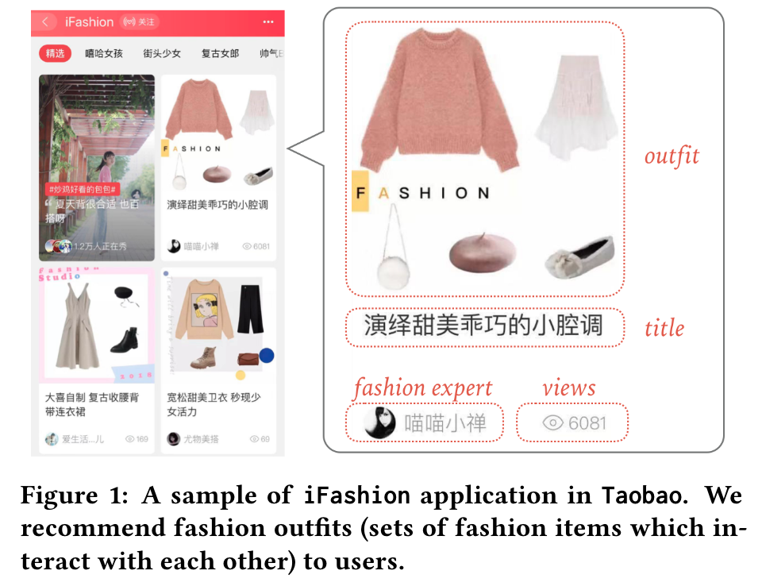
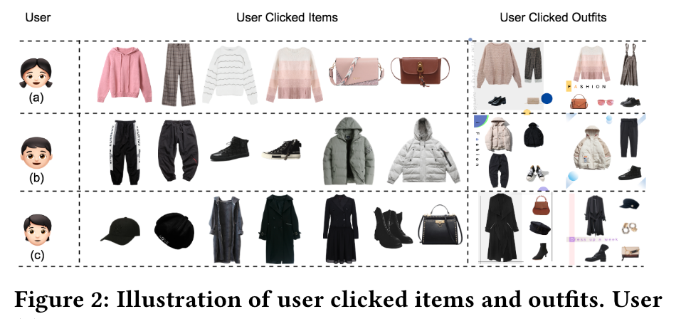
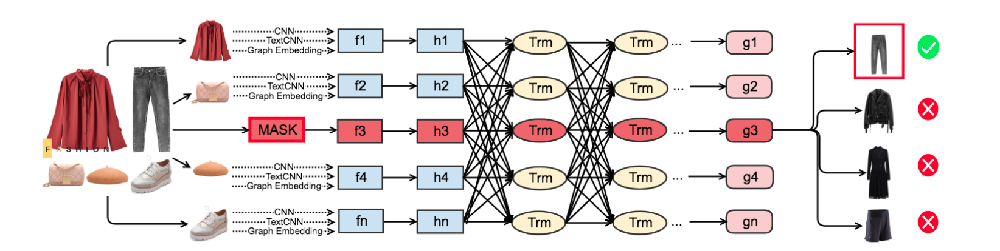
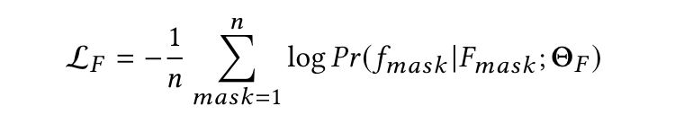
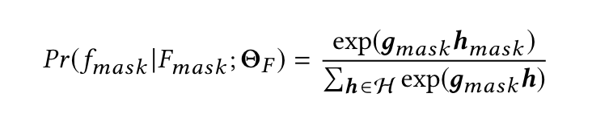
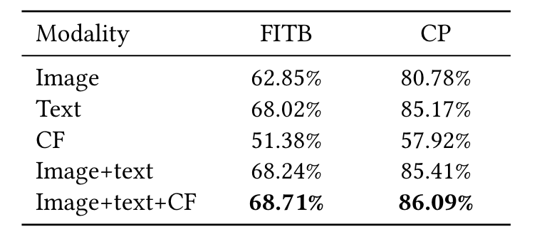
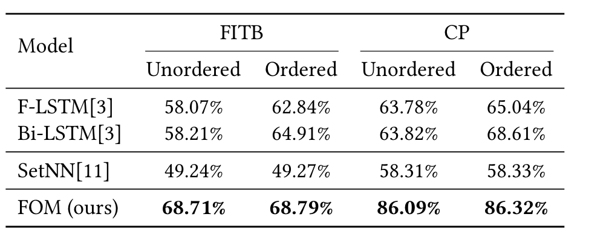
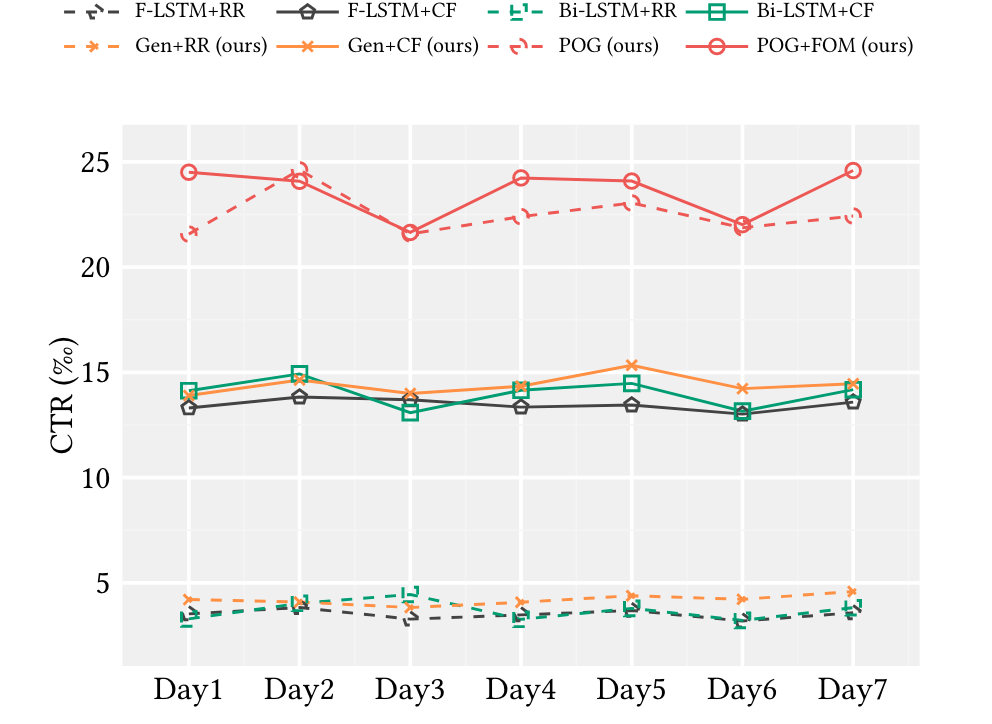

About
标题
POG: Personalized Outfit Generation for Fashion Recommendation at Alibaba iFashion
POG: 阿里巴巴iFashion所用的利用生成个人穿搭的时尚推荐
发表
KDD 2019
团队
阿里巴巴集团
数据集
a large-scale dataset consisting of 1.01 million outfits with rich context information, and 0.28 billion user click actions from 3.57 million users.
https://github.com/wenyuer/POG
Content
Fashion Outfit Recommendation
- 早期工作主要是利用collaborative filtering来根据用户的历史行为模型用户偏好，缺点是倾向于对单品的推荐
- 有基于场景的全套服装推荐
- 有基于图像或关键字的全套服装推荐
- a functional tensor factorization approach，但是需要用户个人信息
主要是都不适合大型在线系统的推荐
提出问题
日益增长的向上购物环境中，服装搭配所体现的问题：
- 时尚元素的搭配 the Compatibility of the generated fashion outfits
- 个性 the Personalization in the recommendation process
解决方案
由于发现大家对单品和穿搭的品味相似，所以提出了一个基于Transformer结构的Personalized Outfit Generation (POG) model来链接用户对单品和搭配的喜好


POG通过捕捉用户的兴趣和品味来生成个人穿搭推荐
-
对于 Compatibility
Fashion Outfit Model (FOM) 学习搭配内不同时尚元素的匹配度，不同单品需要加权计算
设计了一个基于自注意力机制的mask-prediction任务，遮挡某一单品，然后猜这个单品是什么
-
对于 Personalization
整合用户偏好进预训练的FOM提出了Personalized Outfit Generation (POG) model，用来生成既有穿搭感又有个人品味的搭配
POG是基于Transformer编解码器结构的，同时输入【用户偏好】和【搭配匹配度】信息
POG
三阶段：（1）嵌入时尚元素 （2）建立FOM （3）利用训练好的FOM初始化POG
Multi-modal Embedding
过去的工作大多都是利用图像和文字进行多模态嵌入
- ResNet v2模型编码的1536维 白色背景图像稠密向量
- 具有从title中识别category的预训练TextCNN编码的300维 时尚元素稠密向量
- 阿里巴巴自研的Behemoth Graph Embedding平台编码的160维 collaborative filtering signal for the item dense vector ：该平台根据淘宝移动应用中记录的用户点击会话中物品的共同发生率
把上面三个向量合起来生成128维的向量，利用强化学习构造特征空间

Fashion Outfit Model
在进行outfit的特征描述时应该对不同item的权重进行调整
在FOM中设计掩码去预测掩码部分
-
没有使用位置编码：因为是从一组服装搭配中进行学习，而不是一个图像序列
-
首先把 \(F_{mask}\) （mask item + other items）输入两个ReLU层（长方形），让所有输入转化为和Multi-modal Embedding中所说的outfit特征空间向量（椭圆形）

-
再经过Transformer encoder = ((Multi-Head self-attention + Position-wise Feed-Forward Network) + Layer Normalization) * \(l\) 得到 \(g_{mask}\)

Personalized Outfit Generation Model
-
输入：用户点击的时尚单品序列 + 候选集
-
输出：时尚个人配搭
-
过程：
- 将候选集合转化为候选搭配空间向量
- 输入用户点击序列进Per网络
- 通过一个特殊的编码【START】启动Gen网络，解码器就会根据时尚单品每次在候选搭配空间里进行相似度搜索一个搭配的单品，通过自回归结合之前的点击记录进行新的生成，直到编码【END】出现
-
Per网络提供用户偏好信号，Gen网络根据用户偏好和服装搭配生成搭配（Gen网络是用的预训练的FOM模型）
Gen = ((Masked Multi-Head self-attention + Multi-Head attention + Position-wise Feed-Forward Network) + Layer Normalization) * \(l\)
- 掩码是为了预测的单品只与之前生成的输出有关
- Multi-Head attention子层接收编码层的输出，即用户行为
Experiment
Fashion Outfit Compatibility
To evaluate the performances of multi-modal embeddings and models on predicting the outt compatibility, we adopted two wide-used tasks: Fill In the Blank & Compatibility Prediction
FITB任务是从多个选择中预测一个与其他项目兼容的项目，以便在空白处填上。
CP任务是预测一个候选OUTT是否兼容。
不同模态消融

- 在FITB和CP任务中，文本本身的效果最好，但图像和CF提供了互补的信息。
- 单独的CF嵌入效果不是很好，部分原因是它缺乏语义的视觉和文本信息，而这在时尚兼容性中是很重要的。
- 来自Inception Resnet V2的1536维CNN特征被压缩到全连接层的128维。由此产生的维度相对较小，无法包含时尚物品的重要视觉信息，这部分解释了仅有图像模式的表现不佳。类似的结果也可以从[11]中观察到。
与其他方法对比

基于FITB的结果看
（1）基于序列的模型对输入顺序很敏感，而基于集合的模型则不敏感
（2）Bi-LSTM在有序输入和无序输入时都比F-LSTM的结果好
（3）FOM对两个输入都表现得最好
基于CP结果看，与FITB类似，基于序列的模型对输入顺序仍然很敏感。FOM以明显的优势获得最佳性能。
Fashion Outfit Generation and Recommendation
由于SetNN不能生成outts，我们把重点放在可用的生成模型之间的比较上。值得一提的是，现有的生成模型，包括F-LSTM和Bi-LSTM，都不能用来做个性化推荐。所以我们随机推荐（RR）这些生成的信息给用户。为了更好的比较推荐性能，还部署了经典的CF方法来推荐。通过CTR量化比较。

（1）尽管七天内的CTR值不同，我们仍然观察到一个明显的现象，即推荐性能主要依赖于推荐方法。
（2）这些模型的兼容性能有所提高，但不是很明显。
（3）带有预训练的FOM的POG的性能比单独的POG有很大的提高。
Take away
- 数据集（101万服装搭配并有80个常用服装类别标注）
- 文中提到了item的权重，但是似乎并没有体现出来
- 本文主要做特征提取和检索形成一个OUTT，推荐用的RR和CF算法都与本文关系不大